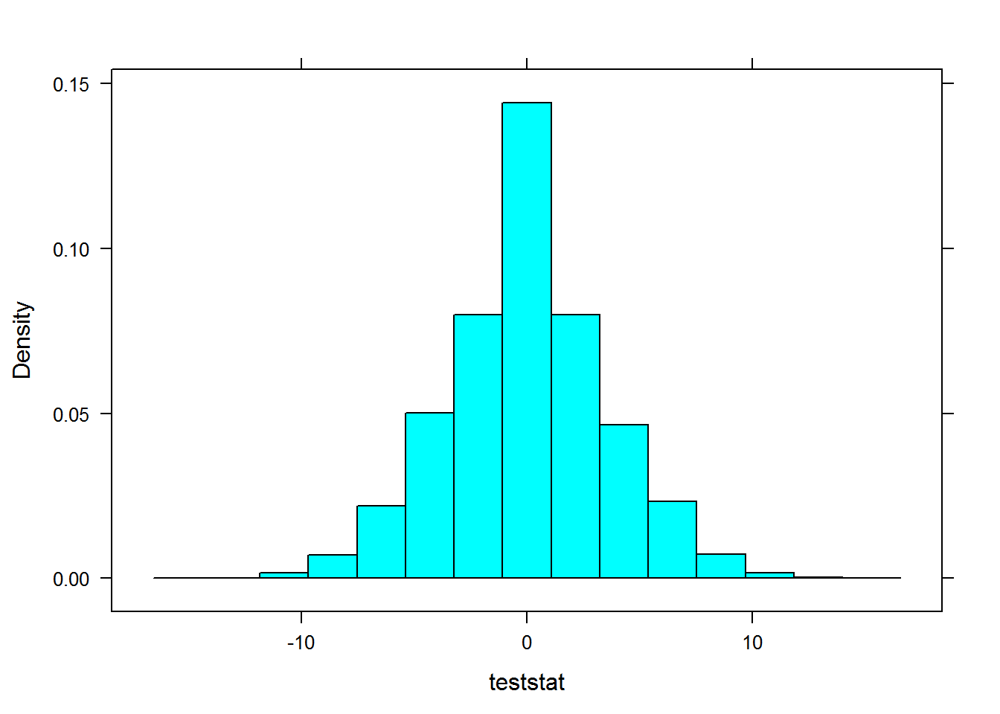

5.3 Goodness of Fit Testing
5.3.1 Objectives
- Setup and conduct a goodness of fit test using both the Pearson chi-squared statistic and the likelihood ratio test. This includes binning and collapsing cells in an appropriate manner
- Give a bound on the p-value from a Pearson chi-squared or likelihood ratio statistics
- Generate empirical p-values for the Pearson chi-squared or likelihood ratio statistics
5.3.2 Introduction
In the estimation problem, either method of moments or maximum likelihood, we needed a model, a parent population distribution, to derive our results. Earlier we had talked about using q-q plots and density estimation to help with the problem of model selection but now we will do it as a hypothesis test. The problem we are trying to solve is to verify that the assumed model is correct. We will do this as a hypothesis test, but in advance be warned that this method has many potential problems.
In this section, we are testing the idea that the data comes a specified probability model. To do this, we bin the data. We make it discrete. In the case of a multinomial problem, this is already done for us. For continuous data, we have to make it discrete by selecting bins. The choice of number of bins and bin size, similar to histograms, is subjective and does have an impact on the results. There are some heuristics to guide but these are often just best guesses.
5.3.3 Review
library(lattice)Continuing with the previous problem where we had in 5.2
\[ \begin{array}{c|c|c|c|c} x & 0 & 1 & 2 & 3 \\ \hline \\ f(x|\theta) & {2 \theta \over 3} & {\theta \over 3} & {2 (1 - \theta) \over 3} & {(1- \theta) \over 3} \end{array} \] for \(0 \leq \theta \leq 1\).
We found the maximum likelihood estimator to be \[\hat{\theta}={ (X_{0}+X_{1}) \over (X_{0}+X_{1}+X_{2}+X_{3}) }\]
Next we performed a likelihood ratio test of he hypothesis \[H_{0}: \theta = 0.5\] \[H_{a}: \theta \neq 0.5\]
The likelihood ratio, our test statistic, is \[\lambda={L(\theta_{0}) \over L(\hat{\theta})}\] where \(\theta_{0}=0.5\) and \(\hat{\theta}=0.45\). This is because for our data
table(Less32Data)## Less32Data
## 0 1 2 3
## 8 1 7 4the maximum likelihood estimate is 0.45.
The likelihood function is \[L(\theta)= \left( {\left(X_{0}+X_{1}+X_{2}+X_{3} \right)! \over X_{0}!X_{1}!X_{2}!X_{3}!} \right) \left( {2 \theta \over 3} \right)^{X_{0}}\left( { \theta \over 3} \right)^{X_{1}}\left( {2 (1- \theta) \over 3} \right)^{X_{2}}\left( {(1 - \theta ) \over 3} \right)^{X_{3}}\]
We know that \(-2ln(\lambda) \sim \chi^{2}(1)\)
The degrees of freedom are determined by counting the free parameters under the unrestricted model, in this case one \(\theta\), and the number of free parameters under the null, no free parameters.
Our p-value was 0.6545
The obvious question at this point is whether the probability mass function specified above is the correct model.
5.3.4 Goodness of Fit Test
5.3.4.1 Hueristic Test
We want to test the idea that our data comes from the distribution
\[ \begin{array}{c|c|c|c|c} x & 0 & 1 & 2 & 3 \\ \hline \\ f(x|\theta) & {2 \theta \over 3} & {\theta \over 3} & {2 (1 - \theta) \over 3} & {(1- \theta) \over 3} \end{array} \] for \(0 \leq \theta \leq 1\).
To proceed we need to know if we also have a hypothesized value for \(\theta\) as this will impact our test statistic. We will attack the problem in both cases so to start let’s assume that we also believe that \(\theta = 0.5\). Thus we want to test if our data comes from the distribution
\[ \begin{array}{c|c|c|c|c} x & 0 & 1 & 2 & 3 \\ \hline \\ f(x|\theta) & {1 \over 3} & {1 \over 6} & {1 \over 3} & {1 \over 6} \end{array} \]
Next we need a test statistic. Again, just making one up, if the null hypothesis were true and the data came from the distribution above, the number of 0’s should equal the number of 2’s. My test statistic is the difference between the number of 0’s and 2’s.
Since I don’t know the distribution of this test statistic, I will use an empirical p-value. We will generate random samples from a multinomial and calculate the test statistic.
teststat<-apply(rmultinom(10000,20,c(1/3,1/6,1/3,1/6)),2,function(x)(x[1]-x[3]))A plot of the values
histogram(teststat)
This is our data
Less32Data## [1] 3 0 1 0 0 2 0 0 2 2 0 0 3 2 3 2 2 0 3 2table(Less32Data)## Less32Data
## 0 1 2 3
## 8 1 7 4The observed value of the test statistic is
table(Less32Data)[1]-table(Less32Data)[3]## 0
## 1And our empirical p-value is
sum(abs(teststat)>=1)/10000## [1] 0.8913Thus we have no reason to reject the hypothesis that our data comes the distribution above. We do have to worry about the Type II error which could be extremely high for this test.
5.3.5 Improved Test
The test we developed above does not use all the information in the cells. An improved test statistic would use all four cells. To do this consider what the expected cell count would be in each cell if the null hypothesis were true. In other words, if the distribution were really
\[ \begin{array}{c|c|c|c|c} x & 0 & 1 & 2 & 3 \\ \hline \\ f(x|\theta) & {1 \over 3} & {1 \over 6} & {1 \over 3} & {1 \over 6} \end{array} \]
We would expect \(20* \left( {1 \over 3} \right)\) or \({20 \over 3}\) zeros in the first cell. Similar calculations can be done for the other cells. We call these values the expected cell counts. We could come up with several test statistics that use all the cells, such as \[\sum_{i=1}^{n}|o_{i}-e_{i}|\] \[\sum_{i=1}^{n}(o_{i}-e_{i})^{2}\] \[\sum_{i=1}^{n}{(o_{i}-e_{i})^{2} \over e_{i}}\]
where \(o_{i}\) is the observed cell count and \(e_{i}\) is the expected cell count under the null hypothesis.
The problem again is knowing the distribution of these test statistics. We could use empirical p-values such as we did above. However, the last test statistics is called the Pearson chi-squared statistics and asymptotically has a chi-squared distribution with \(c-1\) degrees of freedom, where \(c\) is the number of cells.
First let’s calculate an empirical p-value using the Pearson chi-squared statistic and then compare it with the calculated value from the asymptotic distribution.
(e<-20*c(1/3,1/6,1/3,1/6))## [1] 6.666667 3.333333 6.666667 3.333333set.seed(8913)
teststat<-apply(rmultinom(10000,20,c(1/3,1/6,1/3,1/6)),2,function(x)(sum((x-e)^2/e)))
obsstat<-sum((table(Less32Data)-e)^2/e)
sum(teststat>=obsstat)/10000## [1] 0.57The calculated value is
1-pchisq(obsstat,3)## [1] 0.5620941Both of these are close to each other. The power of this test is higher than the previous heuristic test statistic we used.
5.3.5.1 Likelihood Ratio Goodness of Fit Test
We could also test the hypothesis using a likelihood ratio test. The hypothesis would be \[H_{0}: (\pi = (1/3,1/6,1/3,1/6))\] \[H_{a}: \pi_{i} \geq 0 \mbox{ and } \sum_{i} \pi_{i}=1\]
Where \(\pi_{i}\) are the cell probabilities. The likelihood ratio test is
\[\lambda = {L(H_{0}) \over L(H_{a})}\]
Under the alternative, we would maximize the likelihood by estimating each of the cell probabilities of a multinomial. This is a constrained optimization problem as the cell probabilities must add up to one. The maximum likelihood estimators of the cell probabilities are
\[{o_{i} \over n}\]
Here \(o_{i}\) is what we have been calling \(n_{i}\) in previous sections.
Thus the likelihood ratio is
\[\lambda =\left( {\left( {1 \over 3} \right) \over \left( {o_{0} \over n}\right) } \right)^{o_{0}}\left( {\left( {1 \over 6} \right) \over \left( {o_{1} \over n}\right) } \right)^{o_{1}} \left( {\left( {1 \over 3} \right) \over \left( {o_{2} \over n}\right) } \right)^{o_{2}}\left( {\left( {1 \over 6} \right) \over \left( {o_{3} \over n}\right) } \right)^{o_{3}}\]
The notation is a little different in that most books would use \(o_{1}\) for the first cell but we are using \(o_{0}\) since the first cell is the number of zeros.
Note that \(e_{i}=n*\pi_{i}\) so the likelihood statistic could be written
\[\lambda =\left( { e_{0} \over o_{0}} \right)^{o_{0}}\left( { e_{1} \over o_{1}} \right)^{o_{1}}\left( { e_{2} \over o_{2}} \right)^{o_{2}}\left( { e_{3} \over o_{3}} \right)^{o_{3}}\]
The distribution of \(-2log \lambda\) is known to be a chi-squared with 3 degrees of freedom. \[-2log(\lambda)=2 \sum_{i}o_{i}log \left({ o_{i} \over e_{i}} \right) \]
2*sum(table(Less32Data)*log(table(Less32Data)/e))## [1] 2.6508341-pchisq(2*sum(table(Less32Data)*log(table(Less32Data)/e)),3)## [1] 0.4486473This is similar to the Pearson chi-squared test.
5.3.6 \(\theta\) Unknown
In this case we have to estimate \(\theta\) using maximum likelihood. Thus under the null hypothesis, the estimated cell probabilities are
c(2*.45/3,.45/3,2*(1-.45)/3,(1-.45)/3)## [1] 0.3000000 0.1500000 0.3666667 0.1833333The likelihood ratio test is
(e2<-20*c(2*.45/3,.45/3,2*(1-.45)/3,(1-.45)/3))## [1] 6.000000 3.000000 7.333333 3.6666672*sum(table(Less32Data)*log(table(Less32Data)/e2))## [1] 2.4504991-pchisq(2*sum(table(Less32Data)*log(table(Less32Data)/e2)),2)## [1] 0.2936844There are 2 degrees of freedom because we have three free parameters in the alternative hypothesis and one free parameter in the null hypothesis.
Using a Pearson chi-squared statistic, we get
(teststat2<-sum((table(Less32Data)-e2)^2/e2))## [1] 2.0454551-pchisq(teststat2,2)## [1] 0.3596128This p-value tends to be anti-conservative and thus too small. Some people like to be conservative and use 3 degrees of freedom.
1-pchisq(teststat2,3)## [1] 0.5630262In this case it does not change our conclusion.
5.3.7 Practice
Try testing a complex hypothesis such as for the problem we have been working, test:
\[H_{0}: \pi_{0}=\pi_{2} \mbox{ and } \pi_{1}=\pi_{3}\] \[H_{0}: \pi_{0}\neq \pi_{2} \mbox{ or } \pi_{1}\neq \pi_{3}\]
Try testing a goodness of fit for a continuous distribution. Test that the following data comes from an exponential distribution.
lesson32a## [1] 0.09174087 0.15185291 0.29387550 0.23516074 0.01433223 0.02978746
## [7] 0.113167735.3.8 Solution
First, seven data points is small and thus we are off to a weak start. We don’t want empty cells and would like at least 4 or 5 values per cell. This data does not support it so we will make our best attempt but we should already suspect that this test will not have much power.
Our null hypothesis is that the data comes from an exponential distribution. The alternative is that it does not. This is a large set of alternatives and thus another reason to believe we will not have much power.
Let’s bin the data. Since we only have 7 data points, I will pick three bins.
cutpoints<-c(0,.1,.2,Inf)
bin.data<-cut(lesson32a,cutpoints)Notice that since the domain of an exponential is all non-negative real numbers, we used infinite in our bins.
Our estimate of \(\theta\) is \({1 \over \bar{x}}\)
mle<-1/mean(lesson32a)Now to find the expected number of values in each cell, we need the probability of being in the cell from an exponential.
e<-rep(0,3)
e[1]<-pexp(cutpoints[2],mle)*7
e[2]<-(pexp(cutpoints[3],mle)-pexp(cutpoints[2],mle))*7
e[3]<-(1-pexp(cutpoints[3],mle))*7Now the table of values
o<-table(bin.data)
cbind(o=o,e=e)## o e
## (0,0.1] 3 3.702531
## (0.1,0.2] 2 1.744140
## (0.2,Inf] 2 1.553329The likelihood ratio test is
(lrt<-2*sum(o*log(o/e)))## [1] 0.2961037The degrees of freedom are tricky. Under the unrestricted model, we have estimated 2 two parameters. Under the null we have estimated 1. This is anti-conservative to use 2-1 or 1 degree of freedom. It makes the p-value too small. So some people just use 2 degrees of freedom. We will check both.
1-pchisq(lrt,2)## [1] 0.86238641-pchisq(lrt,1)## [1] 0.5863354In both cases we fail to reject but the test does not have much power.
If we used Pearson’s test statistic we get:
pearson<-sum((o-e)^2/e)
1-pchisq(pearson,2)## [1] 0.86101861-pchisq(pearson,1)## [1] 0.58433535.3.9 Practice
Problem 5.21 in the book.